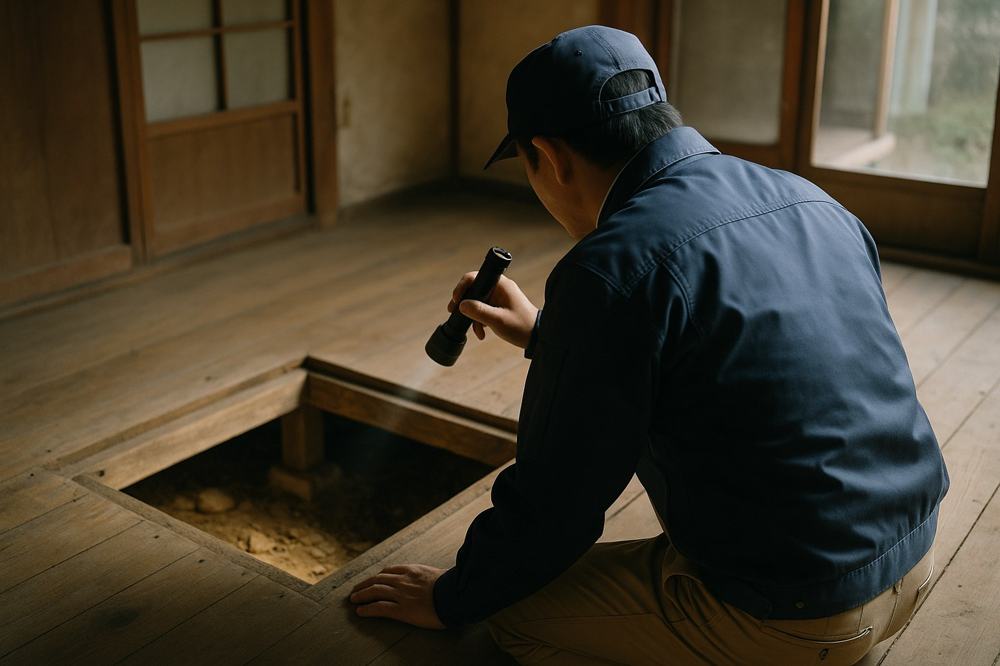

← コラム一覧に戻る

気づかないうちに進行するシロアリ被害は、空き家の資産価値を大きく下げます
温暖で湿度の高い鹿児島は、シロアリが活動しやすい地域のひとつです。人が住まなくなった空き家は換気や点検の機会が減り、被害に気づかないまま進行してしまうケースが少なくありません。この記事では、被害のサインと対策のポイントを解説します。
なぜ空き家はシロアリ被害を受けやすいのか
シロアリは湿気・暗さ・木材がそろった環境を好みます。人が住んでいる家は換気や通水によって床下の湿度が保たれにくいのに対し、空き家は窓を開けず水回りも使われないため、床下や水回り周辺の湿気がこもりやすくなります。
鹿児島県内には、シロアリの中でも被害が大きくなりやすいイエシロアリの生息地域が広く含まれています。鹿児島市・薩摩川内市・霧島市・姶良市など、県内各地で被害相談が寄せられています。
被害に気づくためのサイン
🔍 シロアリ被害のサイン
- 床がふわふわと沈む、歩くと違和感がある
- 柱や畳の下から乾いた木くずのようなものが出てくる
- 基礎や壁に、土でできた蟻道（ぎどう）と呼ばれる筋がある
- 春から初夏にかけて、羽アリを室内や庭先で見かけた
- ドアや窓の建て付けが急に悪くなった
特に羽アリの発生は、すでに巣が形成され被害が進行しているサインであることが多く、見逃さないようにしたいポイントです。
点検・駆除の費用相場
| 内容 | 費用の目安 |
|---|---|
| 床下点検（無料〜有料） | 0円〜1万円程度 |
| 薬剤による防除工事 | 坪あたり6,000円〜1万円程度 |
| 被害箇所の木部補修 | 被害範囲により数万円〜 |
| ベイト工法（毒餌設置） | 建物規模により数万円〜十数万円 |
被害の範囲が構造材にまで及んでいる場合は、補修費用が高額になることもあります。被害が軽微なうちに点検・防除を行うことが、結果的にコストを抑えるポイントです。
放置するとどうなるか
シロアリ被害が進行すると、柱や土台などの構造材が腐食し、建物の耐震性が大きく低下します。売却や賃貸活用を検討する際にも、インスペクション（建物状況調査）でシロアリ被害が発覚すると、価格交渉や契約条件に影響することがあります。
空き家を数年放置すると、シロアリ以外にもイタチやハクビシンなどの害獣が屋根裏に住み着き、糞尿による天井の傷みや悪臭が発生することもあります。定期的な巡回・点検で早期発見を心がけましょう。
空き家オーナーができる予防策
年に数回、床下や基礎周りを点検するだけでも早期発見につながります。庭の木材や薪などを建物の基礎に近づけて放置しない、雨どいの詰まりを解消して湿気を溜めないといった、日頃の管理も有効な予防策です。
TAMARIEでは、空き家の巡回サービスの中でシロアリ・害獣被害の兆候がないかも確認しています。「久しく点検していない」という空き家がありましたら、まずは現状確認からご相談ください。